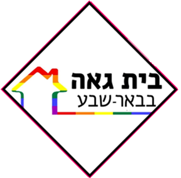
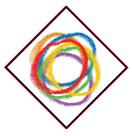
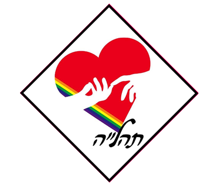
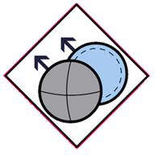
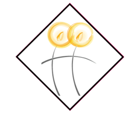
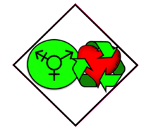

ארגונים
-

בית גאה באר-שבע
בית גאה בבאר שבע הוא ארגון להט"ב, טרנסג'נדרים וביסקסואלים בבאר שבע, הפועל למען להט"ב בבאר שבע ובמרחב הנגב, ולקידום זכויות להט"ב בישראל ובבאר שבע והנגב בפרט.
למידע נוסף -

איג"י - ארגון נוער גאה
ארגון הנוער הגאה מספק מסגרת חברתית למפגש ולהיכרות עם בני נוער בעלי חוויות דומות ופועל לקידום מעמד הנוער הלהט"בי בארץ. לארגון הנוער מעל 60 קבוצות ב-22 ערים ויישובים ברחבי הארץ, וחברים בו יותר מ-3000 חניכים וחניכות המשתתפות בפעולות בצורה פיזית. הארגון פעיל גם בצורה אינטרנטית ונותן מענה ותמיכה בפורומים באינטרנט לכ-4000 אנשים.
למידע נוסף -

תהל"ה - תמיכה להורים של הומואים, לסביות, טרנסג'נדרים וביסקסואלים
ארגון הנוער הגאה מספק מסגרת חברתית למפגש ולהיכרות עם בני נוער בעלי חוויות דומות ופועל לקידום מעמד הנוער הלהט"בי בארץ. לארגון הנוער מעל 60 קבוצות ב-22 ערים ויישובים ברחבי הארץ, וחברים בו יותר מ-3000 חניכים וחניכות המשתתפות בפעולות בצורה פיזית. הארגון פעיל גם בצורה אינטרנטית ונותן מענה ותמיכה בפורומים באינטרנט לכ-4000 אנשים.
למידע נוסף -

חברותא - הומואים דתיים
חברותא - הומואים דתיים, היא ארגון של הומואים בני החברה הדתית, אשר הוקם על ידי בוגרי ישיבות הסדר ומכינות קדם-צבאיות, ורואה עצמו מחויב להלכה.
למידע נוסף -

בת קול - ארגון לסביות דתיות
את הקבוצה החברתית שהפכה להיות בת-קול הקימו כעשר נשים. בחורף 2005 הארגון נולד ונבחר לו שמו. מאז ממשיכות להצטרף לבת-קול עוד ועוד נשים, ונכון ליולי 2012 מונה הארגון כשלוש מאות נשים בנות תשע-עשרה עד שישים פלוס. בבת-קול חברות בוגרות אולפנות כגון כפר פינס וצביה, תיכונים דתיים דוגמת פלך, וכן בוגרות מערכת החינוך החרדית. חלקן הקימו משפחה לסבית ומגדלות ילדים עם בנות זוג, חלקן נמצאות בארון. אלו ואלו מתמודדות עם המורכבויות של בחירתן.
למידע נוסף -

מעברים - ארגון למען הקהילה הטרנסית
ארגון "מעברים" פועל למען כלל הקשת הטרנסג'נדרית: טרנסקסואליות, ג'נדרקווירים ומתלבטים. מטרתו לתמוך ולסייע בתהליכי שינוי אישיים של חברי וחברות הקהילה הטרנסית, תוך קידום תהליכים רחבים לשינוי חברתי.
למידע נוסף